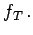

Inhalt Index DeskTop Bronstein

 Algebra und Diskrete Mathematik Boolesche Algebren und Schaltalgebra Normalformen
Algebra und Diskrete Mathematik Boolesche Algebren und Schaltalgebra Normalformen


Unter den kanonischen Normalformen eines BOOLEschen Ausdrucks T versteht man die kanonischen Normalformen der zugehörigen BOOLEschen Funktion 
Oft bereitet die Überprüfung der Wertverlaufsgleichheit zweier BOOLEscher Ausdrücke durch Umformung Probleme. Hilfreich sind dann die kanonischen Normalformen: Zwei BOOLEsche Ausdrücke sind genau dann wertverlaufsgleich, wenn die zugehörigen eindeutig bestimmten kanonischen Normalformen Zeichen für Zeichen übereinstimmen.
| Beispiel |
|
Die Ausdrücke |